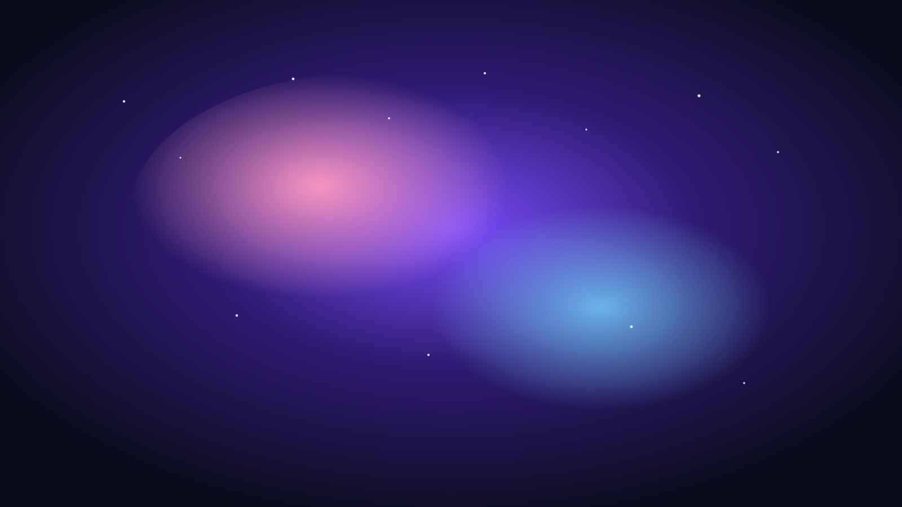

返回首页
Back Home
猎户座大星云 Orion Nebula
Orion Nebula

猎户座大星云（M42）是距离地球较近、最明亮的恒星形成区之一，位于猎户座“剑”部附近。星云内部包含大量气体与尘埃，孕育着年轻恒星。它是研究恒星形成、星际介质与辐射反馈过程的重要天体实验室。
The Orion Nebula (M42) is one of the nearest and brightest stellar nurseries, located in the sword region of Orion. It contains gas and dust clouds where young stars are forming, making it an important laboratory for studying star formation, interstellar media, and radiation feedback.